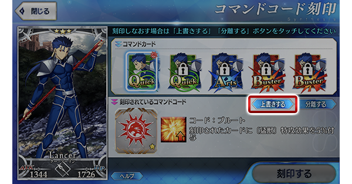
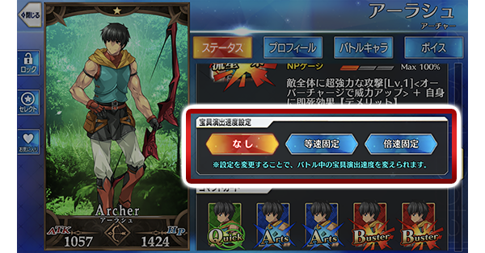
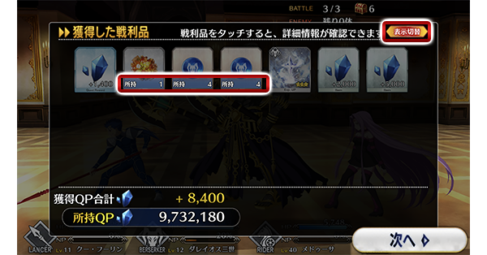
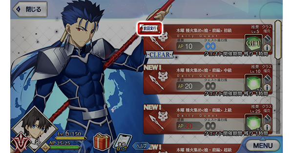

- 10/16
- 【來自迦勒底廣報局】關於10月的遊戲更新
非常感謝各位使用「Fate/Grand Order」。
來自迦勒底廣報局，告知關於預定2018年10月的下次遊戲更新。
以下介紹更新後反映的更新內容中，具有代表性的更新內容。
▼新功能的追加
①在已刻印的★2(UC)以下的指令紋章，追加可新指令紋章「覆蓋」的功能
不使用指令紋章分離道具，能刻印新的指令紋章刻印。請注意將會失去先前刻印的指令紋章。

※開發中畫面。
②寶具演出速度追加可個別Servant設定的功能
能從Servant詳細，下述一樣地個別設定。
【無】 ＝ 速度不個別設定，遵從全體的速度設定
【等速固定】＝ 無視全體的速度設定，速度固定在等倍速
【倍速固定】＝ 無視全體的速度設定，速度固定在二倍速
※10/16(二) 18:00追記

※開發中畫面。
③追加可只限持有Servant初次使用寶具時，寶具演出速度以等倍速顯示的功能
請注意隨著這個，本功能追加以後會進行Servant是否初次使用寶具的記錄。
本功能可能遊戲選項設定為OFF。
▼UI的改善
①於戰鬥結束後的「獲得戰利品」畫面，可確認獲得道具持有數的UI改善

※開發中畫面。
②追加可確認上次施行關卡的顯示

※開發中畫面。
▼遊戲的修改
・擴張可使用『從Servant詳細畫面移動至各Servant的「幕間物語」「Servant強化關卡」功能』的畫面
以上為預定2018年10月實施的下次遊戲更新主要內容。
另外今後，也預定在期間限定活動和期間限定宣傳活動中，會有將通過主線關卡第1部設為開放條件的情況。
無論如何，如果推進主線關卡第1部的攻略會有所幫助。
今後也請多多指教「Fate/Grand Order」。